Sue
Sue · Fukuoka
Sue
Highlighted on the Fukuoka map.
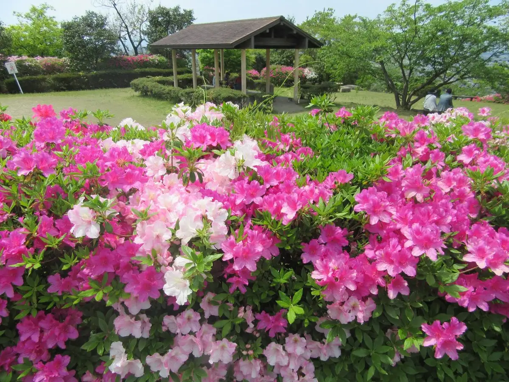
Dining
白龍ラーメン
Hakuryuu Raamen
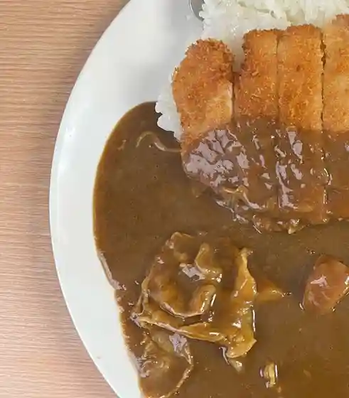
須恵三洋軒
Sue Sanyou Ken
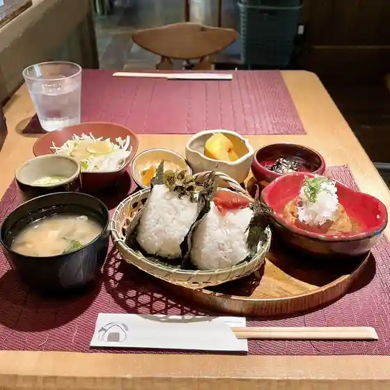
おにぎりカフェ おむすびころりん
Onigiri Kafe Omusubikororin
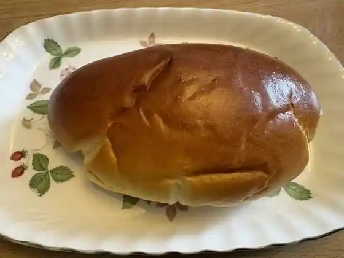
パン・ド・ラパージュ
パン・ド・ラパージュ
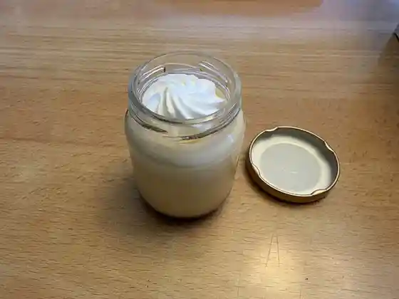
パティスリー アンサンブル
Pateisurii Ansanburu
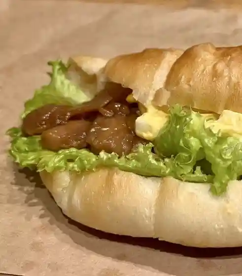
焼きたてパン工房 かえでの木
Yaki Tate Pan Koubou Kaedeno Ki
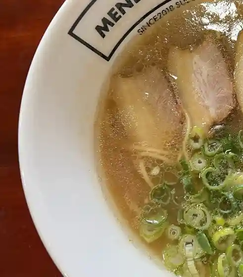
麺処 辰
Men Tokoro Tatsu
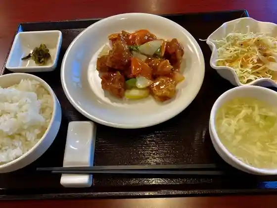
中華料理 林々
Chuukaryouri Hayashi (kurikaesi)
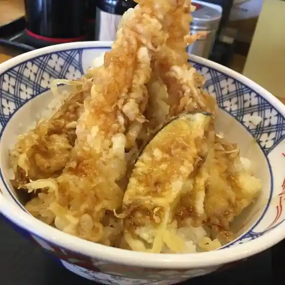
ウエスト 須惠店
Uesuto Sue Mise
鳥平 須惠店
Tori Taira Sue Mise
とり須恵
Tori Sue
居酒屋ぺんぺん草
Izakaya Penpen Kusa
和膳 花庵
Wa Zen Hana Iori
LA35
LA35
寿恵広
Hisae Kou
みつば食堂
Mitsuba Shokudo
喜いち
Ki Ichi
サロン 桜や
Saron Sakura Ya
美らそば キッチンカー
Bi Rasoba Kitchinkaa
otonari
otonari
スナック KATSU
KATSU
マクドナルド 宇美町店
Makudonarudo Umi Machi Mise
新生
Shinsei
スーパーセンタートライアル 須恵店
Suupaasentaatoraiaru Sue Mise
ほっともっと 須恵店
Hottomotto Sue Mise
コーダ スパイス
Kooda Supaisu
ロッキー
Rokkii
一八寿し
Ichihatsu Hisashi Shi
田中洋菓子店
Tanaka Yougashi Mise
長沢ストアー
Nagasawa Sutoaa
グリタコ
Guritako
有限会社 清広食品
Yuugengaisha Kiyohiro Shokuhin
一合半
Ichigou Han
串王 須恵店
Kushi Ou Sue Mise
さくらんぼ
Sakuranbo
小料理大丸
Koryouri Daimaru
YUZUKA
YUZUKA
ファミリーマート 須恵植木バイパス店
Famiriimaato Sue Ueki Baipasu Mise
さん平
San Taira
West Sue
West Sue
Sanyoken
Sanyoken
Rokumi Shunzo
Rokumi Shunzo
Apple Pie of Amano
Apple Pie of Amano
Seafood Izakaya Yasukouchi
Seafood Izakaya Yasukouchi
Big Boy Sue
Big Boy Sue
Sushi Yoshi
Sushi Yoshi
Mammaru Ramen Sue
Mammaru Ramen Sue
Suehiro
Suehiro
Wakasugi An
Wakasugi An
Ramen Zauo Sue
Ramen Zauo Sue
Darumazushi
Darumazushi
Miyako
Miyako
Kisen
Kisen
Utchantei
Utchantei
Karaoke Cafe My Song Hiro
Karaoke Cafe My Song Hiro
Ajidokoro Arao
Ajidokoro Arao
Akisada
Akisada
Family Chuka Miyaen
Family Chuka Miyaen
Switch Cafe
Switch Cafe
Ippachi Sushi
Ippachi Sushi
Rocky
Rocky
Hagure So
Hagure So
Yusuke France Pastry
Yusuke France Pastry
Konnamise
Konnamise
Date No Yakitori
Date No Yakitori
Babbi
Babbi
Ramen Hirotatsu
Ramen Hirotatsu
Taro Jaya Kamakura Sue
Taro Jaya Kamakura Sue
Suzukago
Suzukago
Ajidokoro Juhouen
Ajidokoro Juhouen
Karaoke Bamboo
Karaoke Bamboo
Masumoto
Masumoto
Kodama
Kodama
Azalea
Azalea
Mare
Mare
Sights
Sue Ritsu Sarayama Park
Sue Tachibi Jutsu Center Kuga Memorial Museum
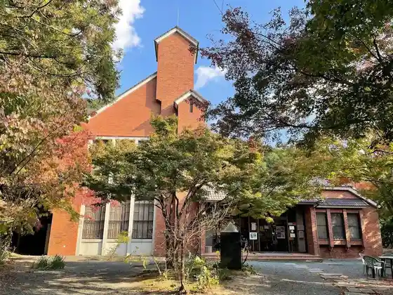
Sue Yaki Kamato
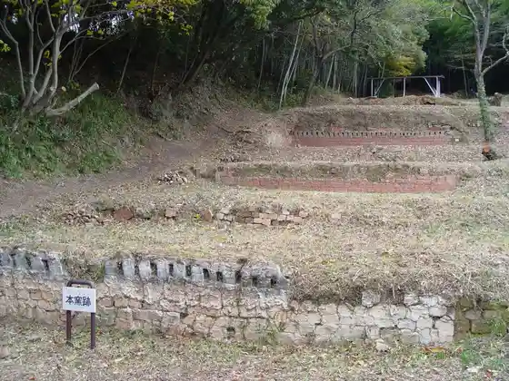
Sue Ritsu Folk History Museum
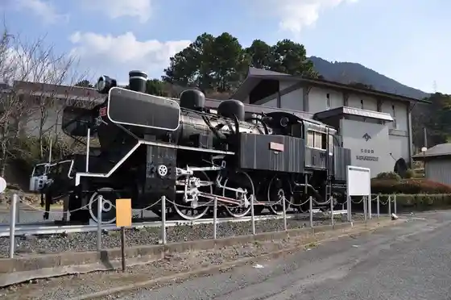
Tabi Ishi Hachiman Shrine
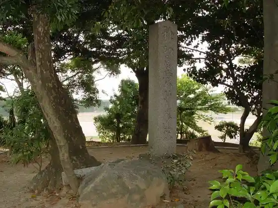